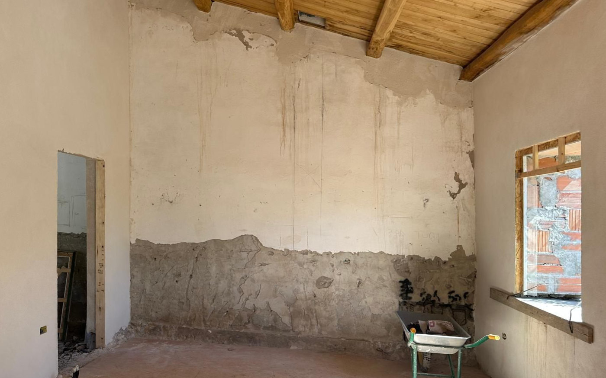
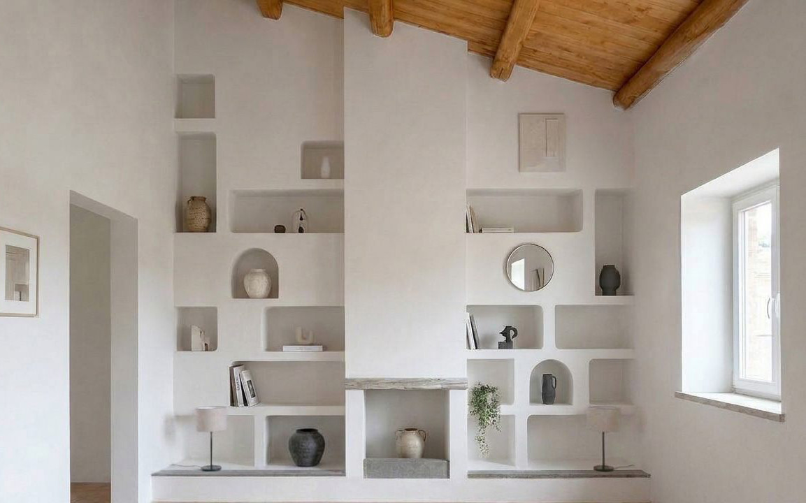
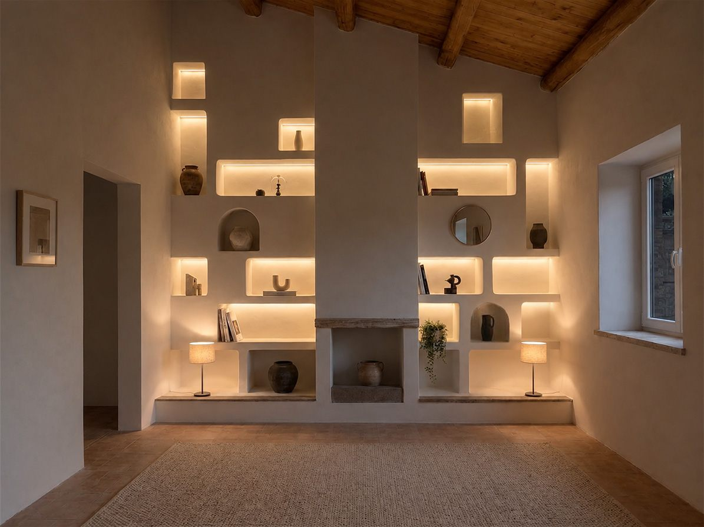

01
parete attrezzata
Una parete da recuperare diventa il cuore della stanza: un sistema di nicchie e mensole su disegno, con luci integrate. Il fotomontaggio sulla foto dello stato di fatto permette di vedere il risultato prima di cominciare i lavori.


